Senior Year is finally here. Let's kick it off right!
Come out to the Frances C. Arrillaga Alumni Center to enjoy a celebratory toast with your friends and classmates on the first Sunday before classes start, September 22nd. The champagne will be flowing, ENABS will be poppin, and tons of tasty appetizers to nibble on while mingling with your friends catching up on their summers.
Want to enjoy Senior Nights this year?
This welcome event will also be your chance to sign the Senior Nights Waiver. No waiver, no buses for you. When you get to the Alumni Center, there will be tables outside with friendly cabinet members pointing the way. Plus free refreshments. Who doesn't like that?
Event Info
Where: Arillaga Alumni Center
When: Sunday, September 22nd from 3-5 pm
What: Sign your Senior Nights Waiver and pop bottles
Who: Everyone you know and love (who are seniors at Stanford)
Follow us on Facebook for updates, last minute changes, event photos, and more info! THIS IS A LINK
Remember those days staring longingly at seniors headed to Palo Alto on Thursdays? Well, remember no more. It's finally time to experience your first set of Senior Nights!
We have an awesome line up this quarter, featuring 5 different venues and a 6th movie premiere night. There's something for everyone. We're kicking off the year with a change of scene at the "new" Illusions: Club Monte Carlo. We'll end the quarter with an all out Palo Alto Pub Crawl.
Come out for at least one, if not all of them! Spend your Thursday nights with the greatest class to ever have graced Stanford (2014...if you didn't get the hint)
- September 26th: Club Monte Carlo
- October 10th: Nola's and The Old Pro
- October 17th: Movie Premiere
- October 24th: The Patio
- November 14th: Rudy's Pub
- November 21st: Palo Alto Pub Crawl
TODO: ADD LINKS TO THE VENUES
Come to the welcome event to sign your waiver. Buses leave from the Tresider Bollards to the venue at 10:30 PM until midnight, unless otherwise stated. Buses leave from venue to Stanford from 1AM to 2AM, unless otherwise stated.
Get more info on the next upcoming Senior Night and hot tips on drink specials by following us on Facebook! THIS IS A LINK EVENTUALLY
Worried about finding a job or figuring out what's the best move for you post graduation? We've got you covered.
Come out to our series of events thrown in parternship with the CDC and Haas. These events are JUST FOR SENIORS. Meaning they're tailored to exactly the hunt you're going through right now. Check one out, or go to all 4. Plus, most will feature free food and drink so you can't really go wrong. More info to come.
- September 30th: Navigating the Career Fair
- October 8th: Job Search Workshop
- October 15th: Extended Deadline for Stanford Alumni Mentoring, just for seniors
- TBD: Haas Fellowship Workshop
Follow us on Facebook for pertinent job hunting tips from the CDC! Let us know what would help you out so we can plan it!
Forget spending your time wandering aimlessly through campus before kickoff looking for a party or tailgate.
Together with the ASSU Exec, IFC, and Stanford Athletics, we're starting the first ever student tailgate zone on Malohney Field. Open to any and all undergraduates. If you lead a student group, dorm/house, or cultural group, you can sign up here to reserve a space for your group's tailgate FOR THE ENTIRE SEASON. We'll even provide you with a tent, table, and grill for your group and handle all the set up / strike before and after the game. You worry about nothing. Just bring the food/drink for your group and have a blast. Did we mention the tailgate zone is right next to the student gate to the Stadium and surrounded by other alumni? Cause it is.
Don't want to throw your own tailgate? That's fine. Come to ours! Every home game of the season we'll be out there a few hours before kick off throwing a tailgate for any member of 2014. And we'll have plenty of free food on hand from Jimmy V's.
This is a chance to change Stanford. You don't want to miss it. Sign up for a space for your group here
- October 5th: Washington
- October 8th: UCLA
- November 6th: Oregon
- November 23rd: Cal
- November 30th: Notre Dame
ADD FIELD MAP
Yup, you read that title right. We're throwing a party in the Skybox.
As the kickoff to our year-long Senior Bucket List Series, we've booked the entire Stanford Stadium Skybox for the Class of 2014 to view the Oregon State away game. Watch the game like Arillaga does. If you've never seen the view from up there (or even if you have), you definitely can not miss this event. Food, drinks, big screen tvs, and we'll even be turning on the massive HD stadium boards to show the game. It's a once in a Stanford career style event.
Space will be limited, so keep an eye out on your inbox to sign up.
Event Info:
Where: Stanford Stadium Skybox
When: Saturday, October 26th. Time TBD based on kickoff
Who: Any 2014er lucky enough to get a spot

Given the 1000+ people that showed up last year, we're bringing this event back. Come out to the Lower Row to watch the Utah game on a massive outdoor screen. Houses will be pulling out couches, we're bringing food trucks, and enjoy the away game as if it were at home with thousands of Stanford students. Open to all, and it's going to be nuts. More info to come.
Event Info:
Where: Lower Row
When: Saturday, October 12th. Time TBD based on kickoff
What: Massive big screen on the lawn and food trucks
Who: Any Stanford fan
Follow us on Facebook for more details and deals on food truck items closer to the event date.
Blink an eye and miss the crazy fast Wine Tasting class sign up? Well we think it'd be depraved not provide an opportunity to all seniors to learn how to taste wine. It is, of course, a *necessary* life skill.
That's why for the lucky first 100 to sign up, we're bringing in partnership with the Stanford Alumni Association, world famous wine writer Mark Oldman. Mark is the wine expert for Pottery Barn and wine columnist for the Food Network. He's flying out to Stanford for the night to teach you the ins and outs of wine. You'll learn how to taste, how to tell the difference between varietals, what to look for when drinking wine. Come out and enjoy a classy and unique experience with your friends.
Space will be limited to 100 seniors, so look out for the sign up email going out on October 8th
Event Info:
When: Tuesday, October 15th @ 7:15PM
What: Wine 101 class
Who: 21+ 2014ers only
Where: Jimmy V's Sports Cafe
Follow us on Facebook to make sure you don't miss when the sign up form goes out!
It's senior year so hopefully you're not studying *too* hard. But even if you are, take a break during finals and come kick it with your classmates. We'll have refreshments in the form of coffee, cookies, chips, and whatever other study/junk food you can imagine out for Seniors at key dining halls and residences around campus.
Come out for an hour, kick back, relax and destress with your friends while munching on goodies....then get back to work because you still need to pass finals to graduate Stanford :)
More info on exact times and locations to come on Facebook. Follow us here.
If you still need to get to know some profs (no such thing as knowing too many), come out to one of our Brown Bag Lunch dates with our lineup of awesome professors. This is a chance to have lunch with a professor with a small group of students (no more than 8) and get to know your professors in a more informal setting. Did we mention we have some of the biggest badasses on campus lined up? Oh, and though it's called "Brown Bag", we'll be taking care of lunch.
To sum it up in 3 words: noms with hotshots.
Space extremely limited so follow us on facebook to make sure you don't miss the sign up form.

There are two basic truths in life: Stanford will beat USC and erryone loves swag. That's why we're hosting a Senior Only Swag Day once a quarter this year. At lunch on swag day, come out to White Plaza to get a free surprise swag item from yours truly. Why? Because why not. We're seniors and we need to stockpile on free Stanford gear before heading out to the real world where we'll have to pay. More info on exact day and location to come.
Like free swag? Don't want to miss the day? Want to show your pretty pics rocking Stanford swag? Follow us on Facebook.
All year long members of our class will be posting reflections about their senior year. Follow your classmates' dreams for the future, fears about graduation, and reflections on their time at Stanford. Read them here(will link somewhere) and email ???? to write one yourself